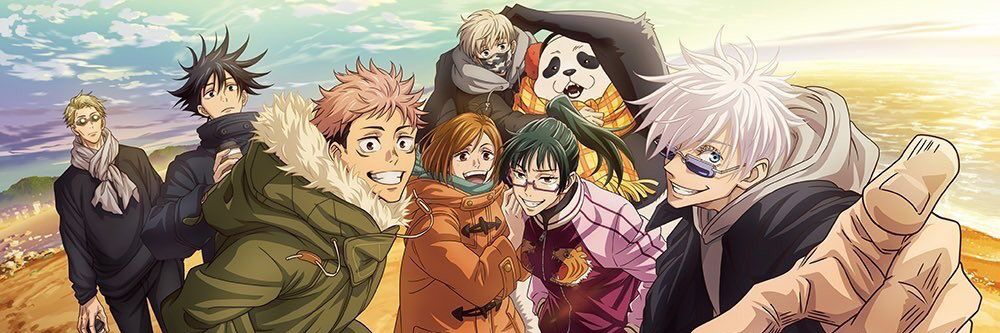

Jujutsu Kaisen

Synopsis
A good-hearted teen named Yuuji Itadori joins his school's occult club for fun but learns that there are real sorcerers who can control the energy between beings for their own purposes. He learns that a cursed talisman known as the demon Sukuna's finger is being pursued by other cursed monsters.
Yuuji Itadori
Yuuji is the main character in the series. He was a normal highschool student until he encountered Megumi and ate one of Sukuna's fingers. After becoming Sukuna's vessel, he attended Jujutsu Tech in Tokyo, with his first-year classmates, Megumi and Nobara.
Ryomen Sukuna
Ryomen Sukuna, most commonly called Sukuna, is a cursed spirit known as the Disgraced One and the King of Curses. He serves as one of the main antagonists of the series. Before using Yuuji as a vessel, his last known part of his body, which was his fingers. Were preserved and sealed away by other Jujutsu sorcerers.
Megumi Fushiguro
Megumi Fushiguro is the deuteragonist in the series. He is a grade 2 jujutsu sorcerer and first-year student at Jujutsu Tech in Tokyo with Yuuji and Nobara. Megumi is also a descendant of the Zenin Clan, which is one of the strongest sorcerers in the story.
Nobara Kugisaki
Nobara is the tritagonist in the series. She is a grade 3 Jujutsu sorcerer and first-year student at Jujutsu Tech in Tokyo with Yuuji and Megumi.
Satoru Gojo
Satoru is one of the main protagonists in the series. He is a special grade Jujutsu sorcerer, which is the highest ranking someone can achieve. He is also known as the strongest Jujutsu sorcerer in the world. He works as a teacher at Jujutsu Tech in Tokyo. One of my other favorites besides Maki :)
Maki Zenin
Maki is a major supporting character in the series, but is one of the main protagonists in the prequel movie. She is a second year at Jujutsu Tech in Tokyo with her classmates with Toge and Panda. She is also my favorite character in the series :D

Toge Inumaki
Toge is a major supporting character in the series and is also one of the main protaganists in the prequel movie. His Jujutsu allows him to control people with his voice. Sadly he cannot control it, so he uses onigiri ingredients to speak. He is a second year at Jujutsu Tech in Tokyo with her classmates with Maki and Panda.
Panda
s a major supporting character in the series and is also one of the main protagonists of its prequel movie. Panda is not actually a panda. He is a Cursed Corps, a nonliving object that has been endowed with a curse, allowing it to gain self-control ( Yes he can talk :D ). He is a second year at Jujutsu Tech in Tokyo with her classmates with Maki and Toge.
Kento Nanami
Kento is a supporting character in the series. Nanami is a grade one sorcerer , and he mainly worked from the Tokyo campus. He also got introduced to Yuuji, who regarded him as a close mentor.